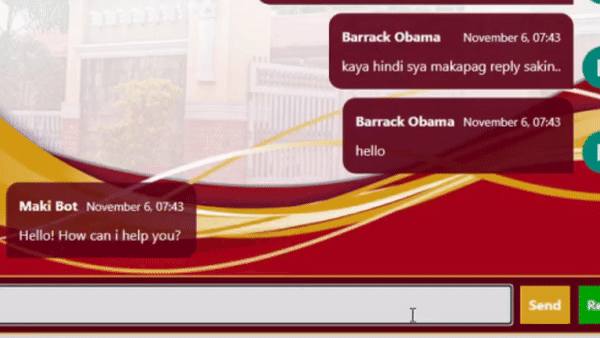

Maki Bot is a chatbot that is almost the same with other chatbots. But there is a little bit of difference that you need to learn about before using it.
You will later learn how to use the toggle of Maki Bot responses where you can deliberately turn on or off its responses to your messages. Why is this important? Because when you need to directly talk with the Admissions Office wether the reason is Maki Bot cannot answer your question or you just want to ask the Admissions Office directly without asking Maki Bot, you will need to turn off its responses because it answers every one of your messages and that will be problematic as you really need to chat the Admissions Office directly.
When you first arrive at the home page, you can click the 'Ask Now!' button to automatically scroll to Maki Bot or you can manually scroll it.
When asking for question, you should choose which category you are: "Junior High school", "Senior High school", "College", "College Graduate", or if you are not one of those, click "Others" and type in the textbox your question.
You will receive a message from Maki Bot letting you choose which questions you want to have an answer with. But if your question is not in the choices, you can wait for the Admissions Office to answer your question instead.
If the question you want to ask is not one of the choices, you can type your question in the textbox and send the message so that Maki Bot will let the Admissions Office know about your question and you wait for them to answer.
While you wait for Admissions Office, you can logout and return later. Just don't forget to turn off the Maki Bot responses when chatting with Admissions Office.

You can click again the toggle button to turn it on if you need to.
When you want to choose again which questions you want to have an answer with, click the 'Reset' button right beside the 'Send' button.
Reset button makes Maki Bot resend its previous message that lets you choose the category and questions.
That is all for this tutorial, these are pretty simple features that you can easily get used to. We hope that you get the answer you are looking for! Just don't forget that you can only ask Admission related inquiries here.